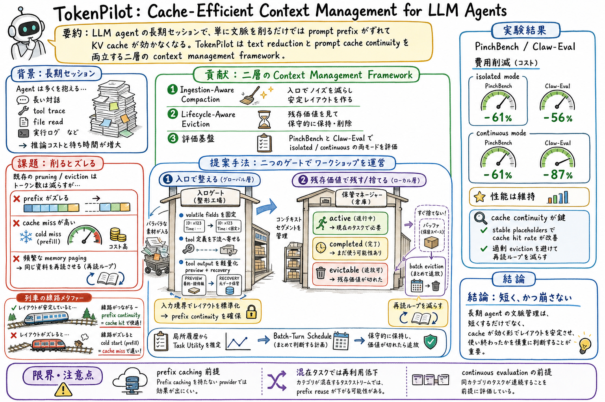

1
まず、長時間動く agent は tool 出力、実行ログ、ファイル内容、過去の判断を抱え込み、context が太るほど費用が増える、という普通の問題から入る。
Reading artifact
TokenPilot は、長期 LLM agent の文脈管理を「削る」だけでなく、prompt cache が効く形で入力レイアウトを安定させる問題として扱う論文。入口で文脈を整え、残存価値が切れたものだけを保守的に捨てる二層設計を提案する。

まず、長時間動く agent は tool 出力、実行ログ、ファイル内容、過去の判断を抱え込み、context が太るほど費用が増える、という普通の問題から入る。
次に、単純に context を削ると token は減るが、prompt prefix の並びや境界が変わって cache が効かなくなり、かえって高い prefill が増える、というこの論文のひねりを説明する。
そのうえで、TokenPilot は入口で文脈を安定化する Ingestion-Aware Compaction と、作業単位の残存価値を見て捨てる Lifecycle-Aware Eviction の二層に分ける、と説明する。
最後に、重い tool output は preview だけ入れ、元データは artifact registry に残して recovery できるので、削ることと戻れることを両立している、とまとめる。
論文は cache hit / miss token と実費用を測り、prefix が崩れると cache miss が増える問題を示している。 agent 運用では、短くしたつもりの context が再読や cache miss で高くつくことがある。
TokenPilot は Ingestion-Aware Compaction と Lifecycle-Aware Eviction を分けて設計する。 tool schema、timestamp、path のような揺れと、sub-task が終わった履歴を捨てる判断を同じ仕組みに混ぜないで済む。
重い tool output は compact preview にし、full payload は artifact registry に残す。Recovery を無効化すると score が落ち、費用も増えると報告されている。 ただ短くするのではなく、必要な時に戻れる設計が、性能と費用の両方を守る。
Lifecycle-Aware Eviction は active / completed / evictable を分け、残存価値がある間は completed segment を保持する。 作業が終わったように見える情報でも、後続の検証や報告で必要になることがある。
この論文は、長時間動く LLM エージェントの context が膨らみ続ける問題を扱っています。普通に考えると、古い履歴や長い tool 出力を削れば安くなる、となりがちです。
でも TokenPilot が面白いのは、削るだけでは不十分だと言っている点です。LLM API では prompt prefix が安定していると cache が効きますが、context を途中で削ったり並びを変えたりすると、その cache が壊れて高い prefill が増えることがあります。つまり token 数だけ見ていると、実際の費用を読み間違える。
そこで TokenPilot は、文脈管理を二層に分けます。入口では path、timestamp、tool schema、重い tool output のような揺れを整えて、prefix を安定させます。作業中の履歴については、active、completed、evictable のように状態を分け、終わったから即捨てるのではなく、残存価値が切れてから捨てます。
さらに、重い tool output は全部 context に入れず preview だけを置き、元データは artifact registry に残します。必要になったら recovery tool で戻せるので、短くすることと、あとで確認できることを両立できます。
結論として、この論文は agent の context management を、単なる要約や pruning ではなく、cache、artifact、recovery、lifecycle を含む runtime design として捉え直すものです。おい丸の運用に引きつけるなら、audit log や tool 出力を全文読むのではなく、preview と再取得経路を持つ設計にする、という判断に直結します。
この論文の良さは、agent のコスト削減を単なる token 節約ではなく、cache continuity と recovery を含む runtime design として見せているところにある。文脈を雑に削ると、あとで同じファイルを読み直したり、cache miss を増やしたりして、結局高くつく。
個人 AI assistant や coding agent の運用では、長い作業、複数 tool、wiki や repo の再読、公開ページ生成のようなワークフローが普通に起きる。TokenPilot は、tool 出力を preview + recovery にする、重複 read を抑える、completed だがまだ使う context をすぐ捨てない、という設計判断の言葉をくれる。
ゆうきさんの関心に引きつけるなら、scheduled-ops や paper-watch の長時間実行を、単に文脈を短くする方向ではなく、再利用できる prefix と戻れる artifact registry を持つ harness として見直す材料になる。
長期に動く LLM agent は、対話履歴、tool trace、file read、実行ログ、検索結果を抱え続ける。文脈が増えると推論コストが上がるため、従来は pruning、summarization、eviction のような文脈削減が中心になっていた。
TokenPilot の面白い点は、文脈削減が常に得ではないと正面から言うところにある。入力の一部を削ったり、順序や境界を変えたりすると、prompt prefix がずれて KV cache が効かなくなり、安い cache read ではなく高い cache miss / prefill が増える。
この論文は、text-level sparsity と hardware-level cache alignment を同時に見る。入口では volatile な path、timestamp、tool schema、重い tool output を整えて prefix を安定させ、局所履歴では task utility が切れるまで context segment を保守的に保持する。
評価は PinchBench と Claw-Eval を使い、isolated mode と continuous mode の両方で行っている。論文は、TokenPilot が競争的な task performance を維持しながら、費用を大きく下げたと報告している。
TokenPilot は、LLM agent の長期セッションで増え続ける context を、cache 効率を壊さずに管理するための framework を提案する論文である。
中心課題は、text pruning や dynamic eviction が token 数を減らす一方で、入力レイアウトを変えて prompt prefix continuity を壊し、KV cache miss を増やしてしまうこと。
論文は、文脈管理を global ingestion boundary と local context sequence の二層に分け、それぞれ Ingestion-Aware Compaction と Lifecycle-Aware Eviction を置く。
入口で volatile な runtime marker を static placeholder に置き換え、tool definitions の位置や tool output の構造ノイズを整えて、byte-identical な prefix を作りやすくする。
重い tool output は compact preview として working memory に入れ、元 payload は artifact registry に残す。必要になったら recovery tool で戻せるため、削減と安全な再アクセスを両立する。
context segment を active、completed、evictable の状態で管理し、completed になっても residual utility が残る間はすぐ捨てない。
PinchBench と Claw-Eval で、task accuracy だけでなく cache hit / miss token と実際の費用を測る。
入力は、agent の task prompt、thinking trace、tool call、final response、tool feedback などの混在した message stream である。
まず message を internal intentional messages と open-world environmental feedback に分ける。前者は高密度の情報として扱い、後者は HTML、terminal log、重複 read などのノイズを含みやすいものとして扱う。
global 側では、path や timestamp のような volatile fields を stable placeholder に置き換え、tool definitions を primary system prompt から動かして prefix mismatch を減らす。
environmental feedback は、HTML slimming、execution output truncation、deduplication、frequency limit などの reduction pass で compact preview にする。元の full payload は content hash で artifact registry に残す。
local 側では、context segment ごとに active、completed、evictable の状態を持たせる。sub-task が終わっても、後続作業で必要な可能性があれば completed として残す。
状態推定は毎 turn ではなく、batch size B ごとに保守的に行う。論文では、過剰に頻繁な eviction は layout consistency を壊し cache miss を増やすため、batch scheduling が重要だと示している。
evictable と判定された segment だけを構造的に purge し、context window を作り直す。必要なら recovery tool が full payload を戻し、削りすぎによる再読ループを防ぐ。
TokenPilot は PinchBench で $3.22、Claw-Eval で $2.27 の総推論費用を示し、競争的な task accuracy を維持したと報告されている。
PinchBench では score 81.3、費用 $2.79、cache miss 1.549M tokens と報告されている。Claw-Eval では Vanilla の $81.52 に対し TokenPilot は $10.58 まで下げたとされる。
abstract では isolated mode で 61% と 56%、continuous mode で 61% と 87% の費用削減を報告している。
Ingestion-Aware Compaction により費用が $7.24 から $4.22 へ下がり、Lifecycle-Aware Eviction を重ねると $2.79 まで下がる。stable placeholders は cache hit rate を PinchBench で 38.7% から 79.2%、Claw-Eval で 67.2% から 83.1% へ改善したと報告されている。
full content access を無効にすると score が 80.9 から 77.1 に落ち、費用も $4.03 へ増える。削るだけでなく、戻れることが性能と費用の両方に効いている。
LLM agent の長期文脈を、task performance を落とさず、prompt cache を壊さず、低コストで管理するにはどうすればよいか。
token 数は減っても、入力境界や prefix が変わると KV cache が効かなくなり、高い cache miss / prefill が増えるため。
path、timestamp、tool schema、重い tool output などを入口で整え、prompt prefix を安定させ、必要なら full payload に戻れる preview を作る。
context segment を active、completed、evictable として管理し、sub-task が終わっても残存価値がある間はすぐ捨てない。
重い tool output を短く保ちつつ、必要な時に元 payload を戻せるため、削りすぎによる性能低下や再読ループを避けられる。
PinchBench と Claw-Eval を使い、isolated mode と continuous mode の両方で task performance、cache hit / miss、費用を測っている。
abstract では、isolated mode で 61% と 56%、continuous mode で 61% と 87% の費用削減を報告し、競争的な性能を維持したとしている。
tool 出力を全部積むのではなく、preview、artifact registry、recovery、重複 read の置換、completed context の保守的保持として設計できる。
prefix caching を持つ provider が前提で、task が激しく混在すると prefix reuse が下がる可能性がある。状態推定の誤分類にも注意が必要。
Introduction、3.2、3.3、Appendix A.4 を読むと、問題設定、二層設計、実装パラメータまでつながる。